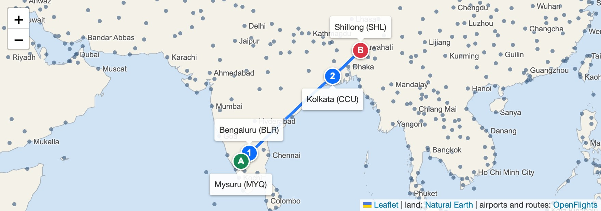
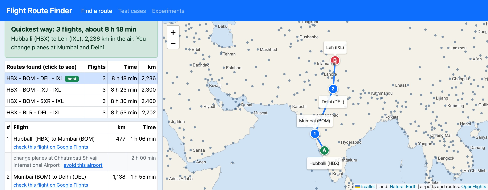
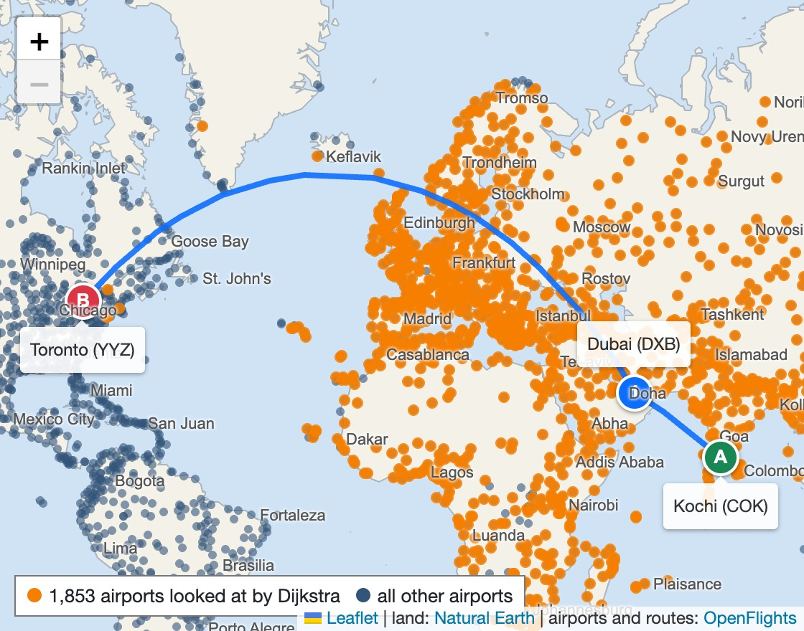
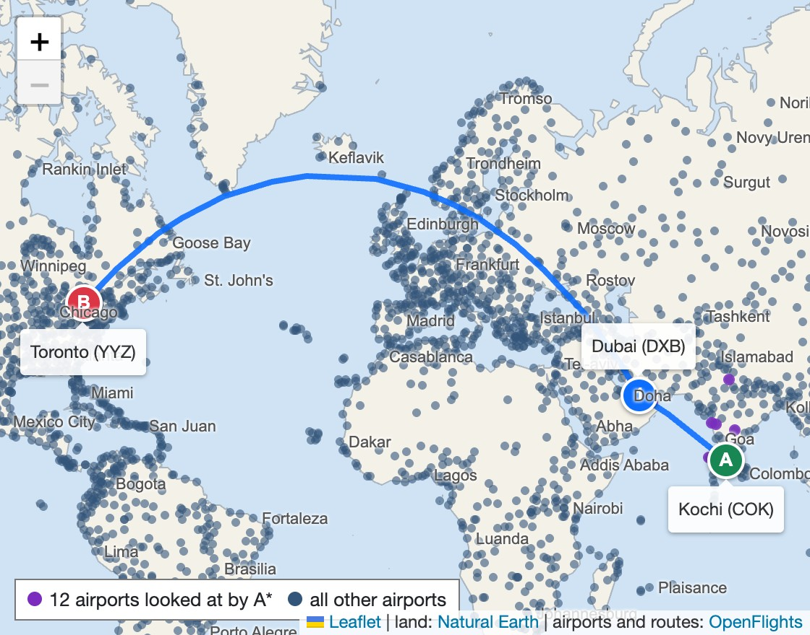

Big cities have direct flights to each other. Small airports do not. In my data Mysuru has flights only to Bengaluru, and Shillong only to Kolkata. Somebody going from Mysuru to Shillong has to change planes, and has to work out where to change.
Problem: given a starting airport and a destination, find the chain of flights that is best for the passenger. "Best" can mean reaching quickest, taking the fewest flights or flying the shortest distance. If an airport is closed (fog, a cyclone) or the passenger cannot pass through it (no transit visa), the route must go round it.
As a graph: every airport is a node, every flight is a directed edge with a cost, and I need the cheapest path from one node to another (single-pair shortest path).

| Input |
• From and To airport (type a city, airport name or 3-letter code, or click a dot on the map). • What matters most: quickest, fewest flights or shortest distance. • Hours wanted between two flights (1 to 4), and airports to avoid. • The network: 3,257 airports with latitude and longitude, 37,042 routes. |
|---|---|
| Output |
• The flights to take in order, with km and time of each, and the total. • Where to change planes, and up to 3 other routes to choose from. • The route on a world map and a link to check each flight on Google Flights. • How many airports the search looked at. |
Data: OpenFlights open database. I cleaned it with a Python script: removed airports without a code, kept every route once (67,663 rows became 37,042) and corrected 20 Indian city names (Madras to Chennai, Patina to Patna). 225 countries, 71 airports in India. 820 routes have no flight back, so the graph is directed.

A web page in HTML and plain JavaScript with Bootstrap and Leaflet. Nothing to install, works on a phone. It draws the world map itself from land outline data, so it works without internet.
Files: index.html, js/app.js (the page), js/routing.js (all the algorithms, 400 lines), tools/build_data.py (cleans the data), tests.html, benchmark.html.
Every flight costs a × km + b, where km is the great circle distance (haversine formula). Only a and b change, so one search function does all three kinds of "best". No cost is negative.
| Best means | a | b | The total is in |
|---|---|---|---|
| Shortest distance | 1 | 0 | km |
| Quickest | 1/800 | 0.5 + wait | hours (800 km/h + 0.5 h a flight) |
| Fewest flights | 0.000001 | 1 | flights (km only breaks ties) |
In A* the heap is ordered by cost so far + a guess of the cost still to go. My guess is the cost of one direct flight to the destination. No real route can be cheaper than that, so the guess is never too high and the answer stays the best one. Airports in the wrong direction get a big guess and sink in the heap.
Dijkstra, shortest distance. Best km known after each step (yellow = changed, CCU improves in step 4):
| Step | Finished | BLR | BOM | HYD | CCU | GAU |
|---|---|---|---|---|---|---|
| 1 | IXE (0) | 307 | 715 | - | - | - |
| 2 | BLR (307) | 307 | 715 | 763 | - | - |
| 3 | BOM (715) | 307 | 715 | 763 | 2381 | - |
| 4 | HYD (763) | 307 | 715 | 763 | 1971 | - |
| 5 | CCU (1971) | 307 | 715 | 763 | 1971 | 2470 |
| 6 | GAU (2470) | destination finished, stop | ||||
A* on the same example. Straight line km to Guwahati: BLR 2039, BOM 2071, HYD 1678, CCU 498. Heap values: BLR 307 + 2039 = 2346, HYD 763 + 1678 = 2441, CCU 1971 + 498 = 2469, GAU 2470, BOM 715 + 2071 = 2786. Guwahati comes out before Mumbai, so A* finishes 5 airports and never Mumbai. Dijkstra finishes all 6.
best[start] = 0, best[all others] = infinity
heap.push(start, guess(start))
while heap is not empty
u = heap.pop() // smallest cost + guess
if u is finished, skip it // old copy
mark u finished
if u is the destination, stop
for every flight u -> v, v not finished or closed
c = best[u] + a * km(u, v) + b
if c < best[v]
best[v] = c; cameFrom[v] = u
heap.push(v, c + guess(v))
guess(v) = a * straightLineKm(v, destination) + b
(guess = 0 gives plain Dijkstra)
I wrote five methods and timed them on the same 100 random trips ("quickest" cost, full network). ms = milliseconds for one search.
| Method | Best route? | Time | ms | What I found |
|---|---|---|---|---|
| Breadth first search | Fewest flights only | O(V + E) | 0.14 | Does not look at km or hours. Not the quickest in 72 of 100 trips. |
| Dijkstra without a heap | Yes | O(V²) | 13.15 | Looks through all airports to find the next one. |
| Bellman-Ford | Yes | O(V · E) | 1.09 | Made for negative costs, which I do not have. Cannot stop early. |
| Floyd-Warshall | Yes, all pairs | O(V³) | not tried | 3.5 × 1010 steps and a table of 10.6 million numbers to answer one question. |
| Dijkstra with a min-heap | Yes | O((V + E) log V) | 0.63 | 21 times faster than without the heap. |
| A* (chosen) | Yes | same, worst case | 0.28 | Same answers. Finishes about 1 airport in 6. |
Why it fits this problem: costs are never negative. I need one start and one destination, not all pairs. The network is sparse (11 routes per airport on average, 0.35% of all possible pairs), so a heap pays off. Every airport has a position, so the straight line guess is free. And the answer must come while the user waits.


27 test cases run on the same code that the page uses (tests.html). Some of them:
| Test | Expected | Got | |
|---|---|---|---|
| Distance, quarter of the equator | 10,007.54 km | 10,007.54 km | Pass |
| Distance London to New York | about 5,540 km | 5,539.6 km | Pass |
| Heap: push 5, 3, 8, 1, 9, 2, 7, 1 | 1, 1, 2, 3, 5, 7, 8, 9 | same | Pass |
| Example, shortest distance | via BLR, HYD, CCU, 2470 km | same | Pass |
| Example, quickest (2 h waits) | via BOM, CCU, 9.10 hours | same | Pass |
| From and To the same airport | 0 km, no flight | 0 km, 0 flights | Pass |
| Example, Hyderabad closed | goes round, 2880 km | 2880 km | Pass |
| Example, Kolkata closed | no route (only way in) | no route | Pass |
| Real: Bengaluru to Delhi | direct, 1710 km, 2 h 38 | same | Pass |
| Real: Mysuru to Shillong | MYQ-BLR-CCU-SHL | same | Pass |
| A* against Dijkstra, 900 searches | same cost every time | 900 of 900 | Pass |
| Fewest flights against BFS | same count | 300 of 300 | Pass |
| Every route can really be flown | all valid | 876 of 876 | Pass |
| Closing an airport never helps | never quicker | 199 of 199 | Pass |
| Slowest of 1800 searches | under 50 ms | about 3 ms | Pass |
| Part | Time | Space |
|---|---|---|
| Network as adjacency lists | O(V + E) to build | O(V + E) |
| Dijkstra with a min-heap | O((V + E) log V) | O(V) lists + O(E) heap |
| A* | same in the worst case | same |
| Dijkstra without a heap | O(V²) | O(V) |
| Bellman-Ford | O(V · E) | O(V) |
| Breadth first search | O(V + E) | O(V) |
V = 3,257 airports, E = 37,042 routes. A V × V table would need 10.6 million cells, the lists need 37,042. The heap can grow to E in the worst case (I push a new copy instead of changing the old one). Measured: biggest heap 1,028 items on average for Dijkstra, 862 for A*.
Random pairs of airports that have a route, same pairs for every method. Chrome 154, MacBook Air (M4).
| Kind of cost | Airports finished | ms for one search | |||
|---|---|---|---|---|---|
| Dijkstra | A* | A* / Dijkstra | Dijkstra | A* | |
| Shortest distance | 1,643 | 190 | 12% | 0.70 | 0.24 |
| Quickest | 1,647 | 284 | 17% | 0.63 | 0.28 |
| Fewest flights | 1,656 | 443 | 27% | 0.64 | 0.38 |
Different from a booking site: not tied to one airline, lets you rule out airports, shows how the answer was found.
Limits: the routes are from 2014, so some flights do not run now and new ones are missing. No timetable and no ticket price, the wait is the same at every airport. Next: real schedules, so that the cost becomes the real arrival time, and price as a fourth kind of cost.
References: E. W. Dijkstra, "A note on two problems in connexion with graphs", Numerische Mathematik, 1959. Hart, Nilsson, Raphael, "A formal basis for the heuristic determination of minimum cost paths", IEEE Trans. SSC, 1968 (A*). Cormen et al., Introduction to Algorithms. OpenFlights (openflights.org/data). Natural Earth. Leaflet.